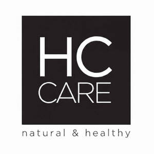

Trade Mark Journal No.2026/008 20 February 2026
UK00004333029 30 January 2026 (3,35)

- Class 3
- Bleaching and cleaning preparations, detergents other than for use in manufacturing operations and for medical purposes, laundry bleach, fabric softeners for laundry use, stain removers, dishwasher detergents; Perfumery; non-medicated cosmetics; fragrances; deodorants for personal use and animals; Hair care preparations, not for medical purposes; Hair care creams; Hair care serum; Skin care preparations; Skin care mousse; Skin care lotions [cosmetic]; Moisturizing preparations for the skin; Anti-aging creams; Anti-wrinkle creams; Pores tightening mask packs used as cosmetics; Facial cleansing preparations; Skin lighteners; Skin toners; Blemish balm creams; Creams for firming the skin; Make-up removing preparations; Eye care products, non-medicated; Exfoliating scrubs for cosmetic purposes; Exfoliating creams; Facial peel preparations for cosmetic use; Sunscreen preparations; Sun protection preparations; Softening cleanser [cosmetic]; Skin softening preparations; Shampoo; Hair shampoo; Facial serum for cosmetic use, Hair masks, Facial masks; Soaps; Dental care preparations: dentifrices, denture polishes, tooth whitening preparations, mouth washes, not for medical purposes; Abrasive preparations; emery cloth; sandpaper; pumice stone; abrasive pastes; Polishing preparations for leather, vinyl, metal and wood, polishes and creams for leather, vinyl, metal and wood, wax for polishing.
- Class 35
- Advertising, marketing and public relations; organization of exhibitions and trade fairs for commercial or advertising purposes; development of advertising concepts; provision of an online marketplace for buyers and sellers of goods and services; Office functions; secretarial services; arranging newspaper subscriptions for others; compilation of statistics; rental of office machines; systemization of information into computer databases; telephone answering for unavailable subscribers; Business management, business administration and business consultancy; accounting; commercial consultancy services; personnel recruitment, personnel placement, employment agencies, import-export agencies; temporary personnel placement services; Auctioneering; The bringing together, for the benefit of others, of a variety of goods, namely, bleaching and cleaning preparations, detergents other than for use in manufacturing operations and for medical purposes, laundry bleach, fabric softeners for laundry use, stain removers, dishwasher detergents, perfumery, non-medicated cosmetics, fragrances, deodorants for personal use and animals, hair care preparations, hair care creams, hair care serum, skin care preparations, skin care mousse, skin care lotions [cosmetic], moisturizing preparations for the skin, anti-aging creams, anti-wrinkle creams, pores tightening mask packs used as cosmetics, facial cleansing preparations, skin lighteners, skin toners, blemish balm creams, creams for firming the skin, make-up removing preparations, eye care products, non-medicated, exfoliating scrubs for cosmetic purposes, exfoliating creams, facial peel preparations for cosmetic use, sunscreen preparations, sun protection preparations, softening cleanser [cosmetic], skin softening preparations, shampoo, hair shampoo, facial serum for cosmetic use, hair masks, facial masks, soaps, dental care preparations, dentifrices, denture polishes, tooth whitening preparations, mouth washes, abrasive preparations, emery cloth, sandpaper, pumice stone, abrasive pastes, polishing preparations for leather, vinyl, metal and wood, polishes and creams for leather, vinyl, metal and wood, wax for polishing, enabling customers to conveniently view and purchase those goods, such services may be provided by retail stores, wholesale outlets, by means of electronic media or through mail order catalogues .
ERC BİTKİSEL KOZMETİK LABORATUVARLARI TİCARET LİMİTED ŞİRKETİ
Representative: SMYRNA LTD